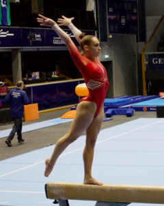
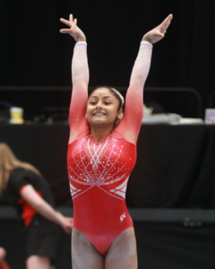

Over the next few weeks, we're going to take a closer look at some of the clubs that make Victorian gymnastics what it is. Each profile will be driven by the data we have in the Stick The Landing database, combined with whatever else we can find out about the club's recent news and history. Some of these clubs are the biggest names in the state. Some are smaller clubs quietly punching above their weight. All of them have a story worth telling.
We're starting with the one that probably tops most people's list. Ask any Victorian gymnastics family which club has the most international-level athletes, the most competition results, or the most Victorian Championship team titles, and the answer is almost certainly Waverley Gymnastics Centre. The data in our database, covering 2024 and 2025 seasons plus the 2026 competition year so far, backs that up thoroughly. What it also shows, if you dig a little deeper, is that gymnastics in Victoria is more interconnected than the headlines might suggest.
The raw numbers
Waverley operates from two facilities, Oakleigh and Glen Waverley, and in our database they have appeared across 35 competitions, recorded 636 individual results, and fielded 102 unique athletes. Those are among the largest figures for any single Victorian WAG club in our records (the most unique athletes and the most competitions attended). The next most active club in terms of individual results is Geelong YMCA with 646, though Waverley's athletes are spread more heavily across the elite levels.
At international level specifically (the Development, Future, Junior, and Senior International streams that sit above Level 10 domestic competition), Waverley has had 20 athletes appear across our three seasons of data. Across our recorded Victorian competitions since 2024, those athletes have taken 23 first-place finishes in international-stream events, along with 16 seconds and 11 thirds. Add Level 9 and Level 10 events into the mix and the totals across the elite tiers reach 39 firsts, 29 seconds, and 18 thirds.
None of that happens without a lot of people doing a lot of good work. The club lists over a dozen competitive coaches, including head coach John Hart, whose public profile notes he has coached gymnasts representing Australia across five Olympics, eleven World Championships, and four Commonwealth Games. That is an extraordinary coaching biography. But as we'll get to shortly, the athletes who end up competing for Waverley don't always begin there.
Breanna Scott, and what our data can and can't tell us

The most decorated athlete in our database from any Victorian club is Breanna Scott, who competes for Waverley and posted a 54.333 all-around at Senior International level, the highest AA score recorded for any Victorian athlete in our system. Scott represented Australia at the 2024 Paris Olympics, won the 2025 Australian All-Around championship, and made the all-around final at the 2025 World Championships, her first Worlds final after four national team selections. In 2026, she has already competed at back-to-back FIG World Cup events in Baku and Antalya.
She is not the only Waverley athlete competing on the international stage. Emily Whitehead won the Senior All-Around at the 2026 Oceania Championships and competed at the Commonwealth Games selection event. Alice Johnson won the Junior All-Around at the same Oceania event. Romi Brown and Haylee Whitehead were both selected for the 2026 DTB Pokal in Germany. Audrey Hawkins, Miella Brown, and Paige Hum are also in the Senior or Future International stream.
Here is where we have to be honest, though, both about the limits of our data and about gymnastics development more broadly. Our database starts in 2024. For an athlete like Breanna Scott, who was already competing at the highest level by the time our records begin, we can't see her earlier years at all. What we do know publicly is that she began gymnastics at age seven at a club in Sydney, meaning her formative years happened entirely outside Victoria, let alone at Waverley. For other established senior athletes in the squad, our data only picks up their story partway through, so we genuinely can't say where those journeys began.
This isn't a criticism of Waverley. It's just an honest read of what the data can and can't tell us. Elite gymnasts are shaped by every coach and every club they've trained with, sometimes across multiple states and many years. By the time an athlete is posting 54-point all-arounds at Senior International, the credit belongs to a long chain of people, and Waverley is one link in that chain, not necessarily the first.
Elite gymnasts are shaped by every coach and every club they've trained with, sometimes across multiple states and many years.
What we can see: the transfer picture
Where our data is clearer is in the movement of athletes between clubs within the 2024–2026 window. Eight athletes in our WAG database show results at Waverley and at least one other Victorian club. Their stories are worth telling carefully, because they show the interconnected nature of the Victorian gymnastics community.
Audrey Hawkins is one of the most striking examples. In early 2024, she was competing at Junior International level for MLC Gymnastics Club, posting all-around scores in the 46–47 range at both State Team Trials and the Senior Victorian Championships. That is meaningful international-level competition work. She moved to Waverley later in 2024 and has since progressed to Senior International level, posting 48.750 AA at the 2026 Senior Vics. MLC gave her an international foundation, and Waverley continued the story.
Madison Marburg was competing for Melbourne Gymnastics Centre (MGC) at Level 7 through the second half of 2024, posting all-arounds of 45.5–45.7. She moved to Waverley for the 2025 season, competed at Level 8, and then delivered a 50.000 AA at the 2025 Senior Victorian Championships, a big jump in one season. That Level 7 base from MGC clearly mattered. Isabella Morgan and Piper Siegel followed a similar path: Level 5 and Level 7 at MGC respectively in 2024, both now competing for Waverley at higher levels.

Suhana Ahmad was competing at Future International level for Niddrie Gymnastic Club in early 2025, with scores of 44.35–44.85. She moved to Waverley mid-2025 and has since progressed to the Development International 16+ stream. Niddrie developed an international-level gymnast; Waverley is now the environment for that next chapter.
The traffic doesn't flow only in one direction, either. Jaella Koski spent two seasons competing at Levels 9 and beyond for Waverley before moving to Cheltenham Youth Club, where she is now competing at Level 10. Lily Fletcher also moved from Waverley to Cheltenham. Clubs gain athletes from each other all the time, for all sorts of reasons: coaching relationships, geography, what a gymnast needs at a particular stage of development.
The broader point is that when a Waverley gymnast stands on a podium at nationals or comes home from Oceania as a champion, the credit belongs to a web of coaches and clubs, not just whichever club name happens to be on the tracksuit that week.